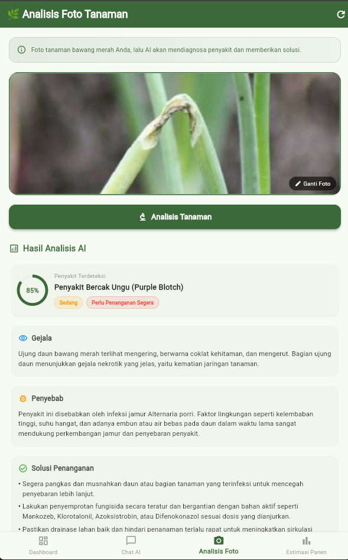
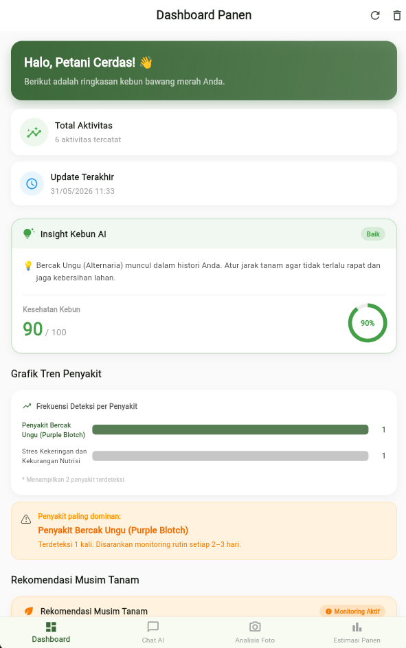
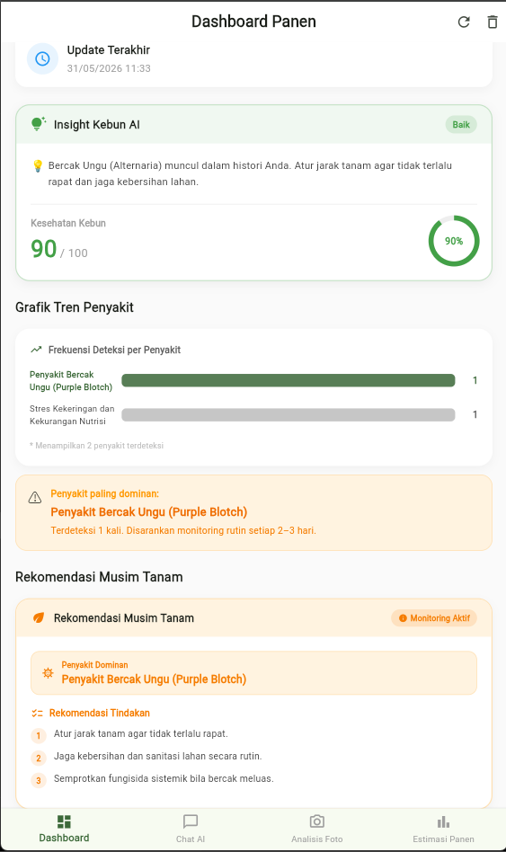
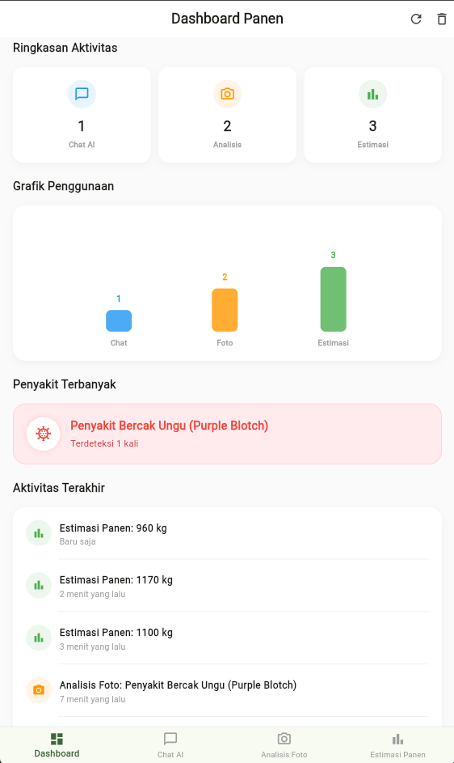
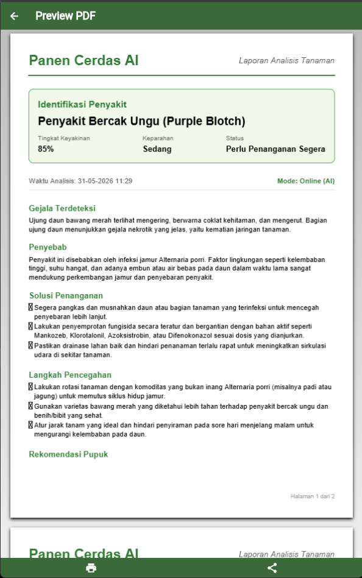
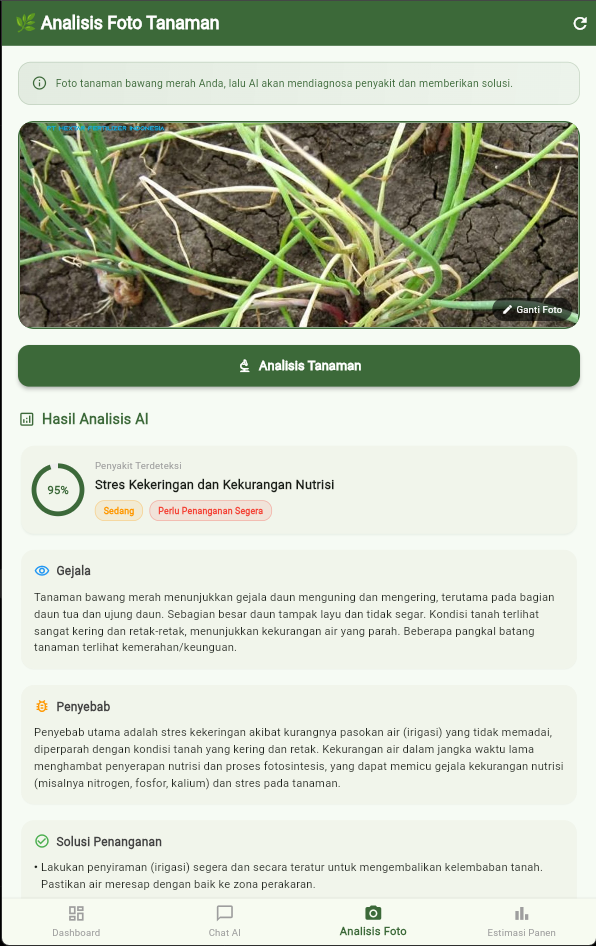
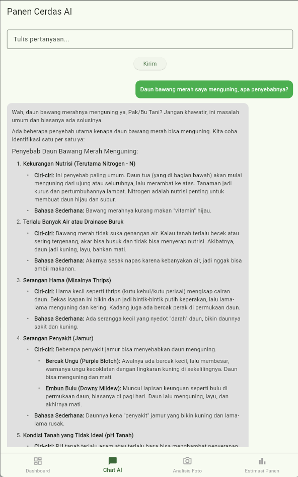
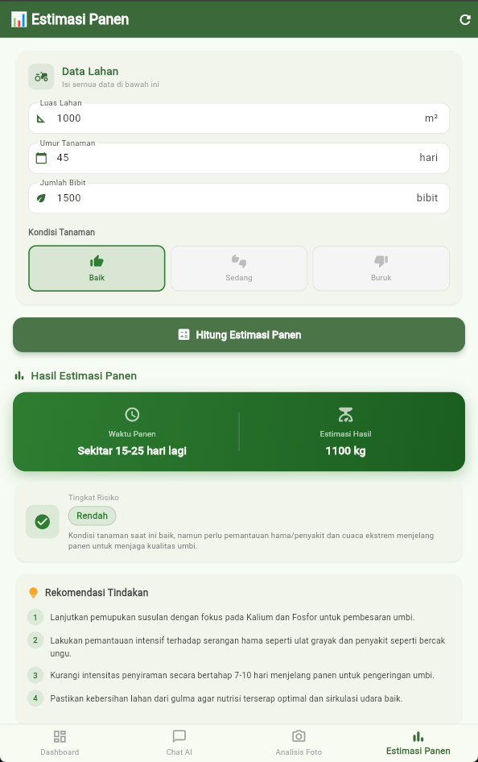
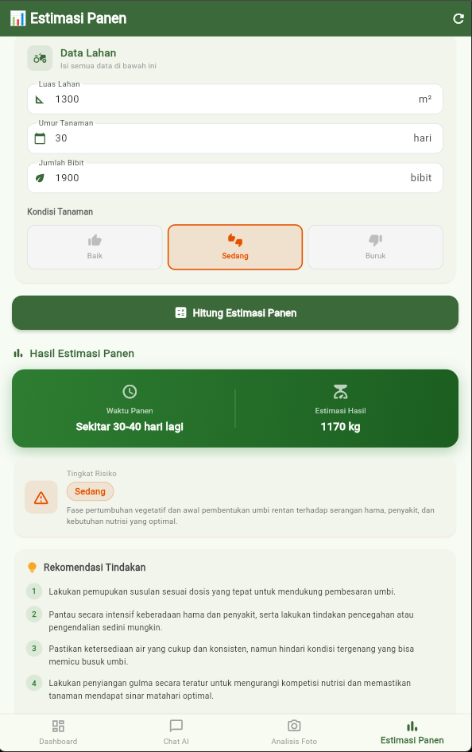
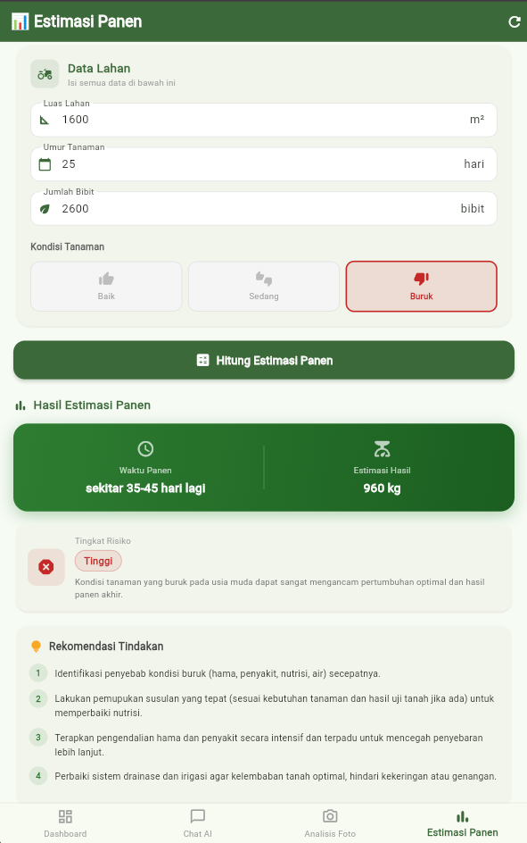

Panen Cerdas AI membantu petani mendeteksi penyakit tanaman, memantau kesehatan kebun, menganalisis tren penyakit, dan memberikan rekomendasi penanganan secara cepat menggunakan Artificial Intelligence.

Solusi modern untuk masalah pertanian tradisional
Teknologi cerdas di genggaman Anda
Kenali penyakit bawang merah hanya dengan memfoto daun yang bermasalah menggunakan AI.
Aplikasi tetap berfungsi mendiagnosis penyakit meskipun tanpa koneksi internet.
Pantau seluruh aktivitas kebun, mulai dari jumlah analisis hingga grafik penggunaan.
Skor kesehatan kebun dan rekomendasi pintar berbasis riwayat analisis lahan Anda.
Visualisasi penyakit yang paling sering menyerang untuk pengambilan keputusan dini.
Tips jitu untuk musim tanam berikutnya agar terhindar dari penyakit endemik di lahan.
Simpan dan bagikan laporan lengkap analisis penyakit tanaman ke penyuluh pertanian.
Tampilan antarmuka modern yang mudah digunakan









Dibangun menggunakan tumpukan teknologi modern yang tangguh
Perkembangan fitur aplikasi dari versi ke versi
Implementasi rule-based AI tanpa internet.
Integrasi Gemini Vision untuk deteksi penyakit.
Penyimpanan penyakit secara offline.
Statistik penggunaan aplikasi.
Penyakit paling banyak muncul.
Fitur ekspor laporan penyakit ke file PDF.
Skor kesehatan dan rekomendasi kebun.
Visualisasi chart frekuensi penyakit.
Saran pergantian bibit dan strategi tanah.
Sinkronisasi data ke cloud dan fitur komunitas.
Mahasiswa Teknik Informatika
Politeknik Negeri Jember
Lead Developer Panen Cerdas AI. Tertarik pada Mobile Development, Artificial Intelligence, dan Agritech.
Unduh versi terbaru sekarang dan mulai lindungi tanaman bawang merah Anda.
Download APK TerbaruVersi 1.8 (Stable)